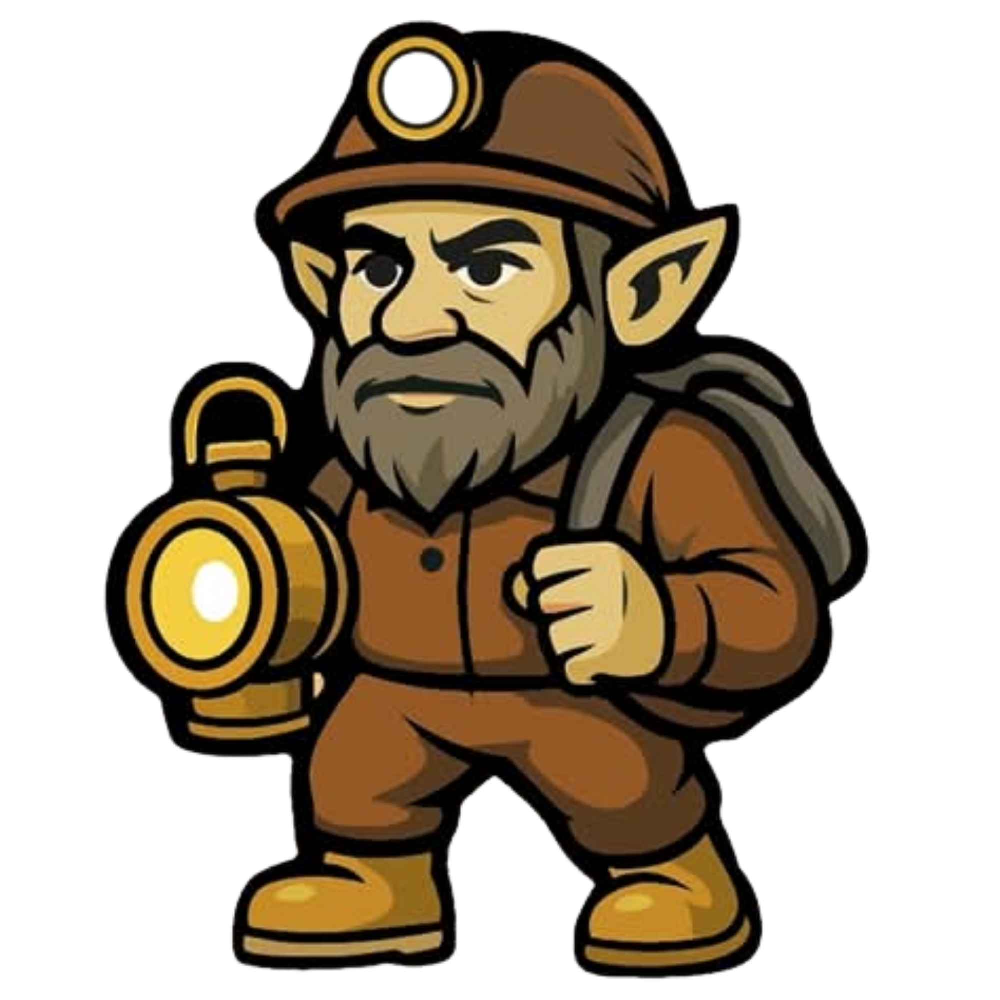

TRADICIÓN MINERA · FUTURO SOSTENIBLE
II CONIMAPE 2026 será realizado en...
CONIMAPE 2026 es un evento académico, técnico y empresarial enfocado en fortalecer la formalización, productividad, innovación y sostenibilidad de la pequeña minería y minería artesanal en el Perú.
Un espacio de integración entre mineros, profesionales, estudiantes, empresas proveedoras e instituciones para compartir conocimientos, experiencias y soluciones aplicadas al sector minero.

Conoce los principales desafíos y oportunidades que impulsan el desarrollo de la pequeña minería y minería artesanal.
Fortalecemos procesos de formalización, productividad y desarrollo sostenible para los pequeños productores mineros.
Promovemos una cultura preventiva, buenas prácticas y protección de la vida del trabajador minero.
Impulsamos una minería responsable, con tecnologías limpias y cuidado del entorno.
CONIMAPE reúne a profesionales, productores, empresas e instituciones comprometidas con el desarrollo de una minería responsable.
Productores mineros que buscan mejorar sus procesos y fortalecer su actividad.
Espacio para compartir experiencias, soluciones y oportunidades de desarrollo.
Tecnología, equipos y servicios para el sector minero.
Ingenieros y especialistas vinculados a la industria minera.
Nuevas generaciones interesadas en minería sostenible.
Organizaciones comprometidas con el desarrollo minero.
Una experiencia diseñada para fortalecer conocimientos, generar oportunidades y conectar a los principales actores de la pequeña minería y minería artesanal.
Conoce nuevas metodologías, experiencias y soluciones aplicadas al sector minero.
Conecta con profesionales, empresas proveedoras y actores del sector minero.
Descubre tecnologías y herramientas para mejorar los procesos mineros.
Genera alianzas estratégicas y oportunidades de crecimiento.
Recordamos los mejores momentos del primer encuentro que dio inicio a esta gran comunidad minera.
CONIMAPE 2026 | Arequipa, Perú